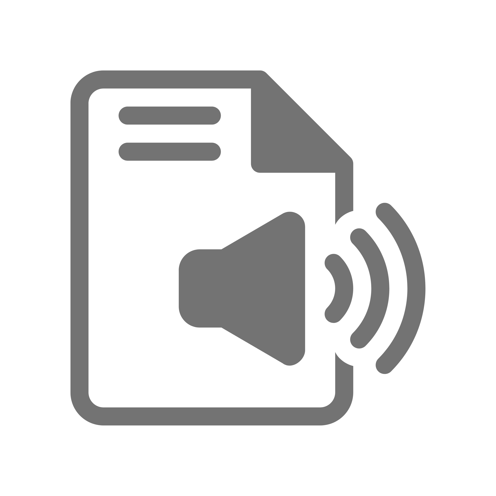

Importancia da Transcrição de Áudio
A transcrição de áudio desempenha um papel fundamental na promoção da acessibilidade digital, permitindo que pessoas com deficiência auditiva ou surdez tenham acesso ao conteúdo de áudio de forma equivalente. Ao fornecer transcrições precisas do conteúdo falado, as barreiras de comunicação são reduzidas, possibilitando uma participação mais inclusiva em uma variedade de contextos, como vídeos online, podcasts, conferências e material educacional. De acordo com a World Wide Web Consortium (W3C), a transcrição de áudio é uma prática recomendada para garantir a acessibilidade na web, contribuindo para a igualdade de oportunidades e o respeito à diversidade.
Benefícios da Transcrição de Áudio
A transcrição de áudio oferece uma série de benefícios significativos, especialmente no contexto da acessibilidade. Primeiramente, ela proporciona acesso a conteúdos auditivos para pessoas com deficiência auditiva, permitindo que elas tenham acesso a informações que, de outra forma, seriam inacessíveis. Além disso, a transcrição de áudio pode melhorar a compreensão e retenção de informações para uma variedade de públicos, incluindo estudantes, profissionais e indivíduos em geral. Isso possibilita uma maior disseminação e compreensão de conteúdos, promovendo inclusão e igualdade de acesso à informação.
Softwares que utilizam inteligência Artificial
Entre eles, destacam-se o Google Cloud Speech-to-Text, que oferece uma API capaz de converter áudio em texto com alta precisão e suporte a vários idiomas, o Amazon Transcribe, que é um serviço da AWS com recursos avançados como identificação de falantes, e o Microsoft Azure Speech Services, que proporciona transcrição em tempo real e integração com outras soluções da Microsoft. Além desses, o IBM Watson Speech to Text oferece customização de modelos de linguagem e detecção de palavras-chave, enquanto o Otter.ai se destaca por sua rapidez e precisão na transcrição, além de recursos de colaboração.